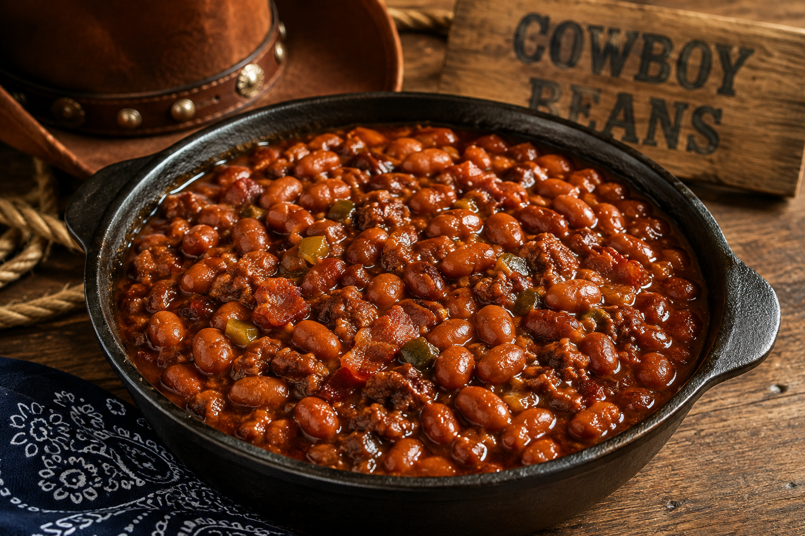

Slow Cooker Cowboy Beans

Description
This easy cowboy beans recipe combines soft beans, crispy bacon, and ground meat in a tasty, sweet-and-savory sauce.
It is full of rich, smoky flavor that everyone will love.
You can eat it as a full meal with cornbread or serve it as a side dish at a barbecue.
It's super simple to make and tastes even better the next day!
Ingredients
- Brown sugar
- Chopped onion
- Canned beans
- Bacon
- Ground beef
- Salt and pepper
- Barbecue sauce
- Mustard
- Ketchup
Steps
- Cook the Meat: Sauté or brown the bacon and ground beef in a large skillet over medium heat without added oil until fully cooked. Drain off excess grease to keep it light.
- Soften the Onions: Stir the chopped onion into the skillet and heat for 3 to 4 minutes until tender and clear.
- Combine Ingredients: Transfer the meat and onions to a large pot. Mix in the canned beans, brown sugar, ketchup, mustard, barbecue sauce, salt, and pepper until evenly blended.
- Simmer or Bake: Transfer everything to a large pot, cover, and gently simmer on low heat on the stove top for 25 to 30 minutes (stirring occasionally), or bake uncovered in a preheated oven at 350°F (175°C) for 45 minutes until warm,
bubbling, and thickened.
- Serve: Allow to rest for 5 minutes before serving warm.
home page